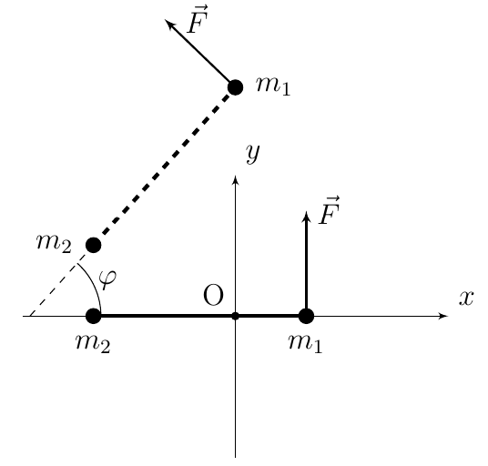
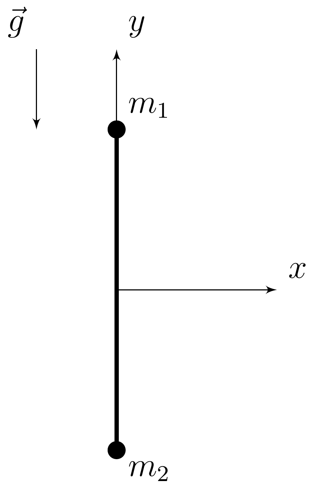
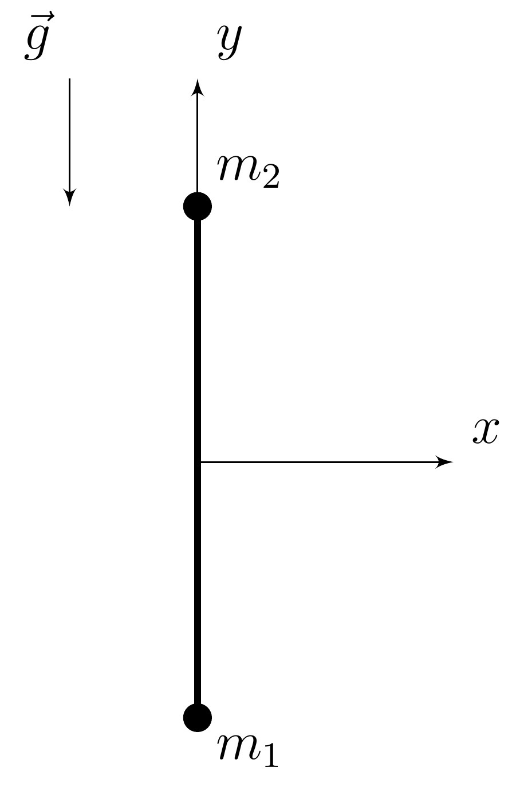
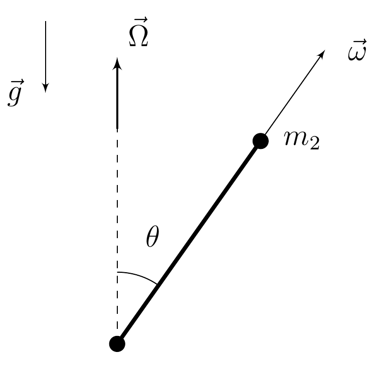

X26 (2026) — English translation
The dumbbell consists of a light rigid rod of length $l$ and two point masses at its ends: $m_1$ and $m_2~$($m_1 > m_2$). There is no gravity field in this part. The dumbbell is fixed at some point on a cylindrical hinge so that it can rotate in the plane containing it. The system is in a viscous medium, so the force of viscous friction acts on the point ends of the dumbbell (and only on them), which is equal to $$\vec{f}_i = - \gamma\vec{v}_i,$$ где $i$ — номер конца, $\vec{v}_i$ — скорость в лабораторной системе отсчёта, а $\gamma > 0$.
Известно, что момент инерции $J$ of the dumbbell relative to the axis of rotation is minimal among all that can be obtained by fixing the dumbbell in the manner described.
At the moment of time $t = 0$ the dumbbell was at rest, and a force $F$, constant in magnitude, was applied to the heavy end $m_1$, the direction of which is always perpendicular to the arm of the dumbbell.
At this point, the gravity field and friction force are absent. Now the dumbbell is not secured.
Let us introduce a rectangular Cartesian coordinate system $\mathrm{O}xy$. At the moment of time $t = 0$ the dumbbell was at rest along the axis $\mathrm{O}x$ and a force $F$, constant in magnitude, was applied to its heavy end $m_1$, the direction of which is always perpendicular to the arm of the dumbbell. At the initial moment, the force is co-directed with the $\mathrm{O}y$ axis.

You may need the following Fresnel integrals: $$\int \limits_{0}^{\ \infty} \sin(x^2)\mathrm{d}x = \int \limits_{0}^{\infty}\cos(x^2)\mathrm{d}x = \sqrt{\frac{\pi}{8}}.$$
Now the dumbbell is not fixed, it is in a viscous medium in the gravitational field, and it is also acted upon by a constant Archimedes force, the point of application of which is in the middle of the dumbbell. Its modulus is equal to the force of gravity. Initially, the dumbbell rests in a vertical position.

In this part of the problem and further, for convenience, when solving and expressing the answer, you can use the following notation: by $\vec{\Delta}$ we denote the vector, the beginning of which is located at the center of mass of the dumbbell, and the end - in its middle; $\Delta = |\vec{\Delta}|$.
The dumbbell is slightly tilted from its equilibrium position.
Now, under the conditions of the previous point, the dumbbell is in a stable vertical equilibrium position: the heavy end $m_1$ is strictly under the light end $m_2$.

The dumbbell is deflected from the vertical by an angle $\varphi_0 \ll 1$, and then released without initial speed. Consider the energy losses caused by viscous friction to be small.
Even if you did not complete the previous step, the approximation introduced in it can be used further.
Now let the dumbbell rod be a homogeneous cylinder with radius $R$, length $l$ and mass $m$. In this section we will consider the precession of such a “top” under the influence of its own gravity. From now on until the end of the problem, assume $m_1 = m_2 = 0$.
You can always use the notation $I$ when solving and expressing your answers.
One of the ends of the dumbbell is fixed to the table surface on a spherical joint without friction. The dumbbell rotates around its axis with a very high angular velocity $\omega$, so we can further assume that the total angular momentum $\vec{L}$ of the dumbbell is directed along the vector $\vec{\omega}$. In addition to the reaction force of the support, the force of gravity also acts on the dumbbell, the moment of which causes a movement called gyroscopic (or regular precession): the center of mass of the dumbbell rotates around the vertical passing through the spherical joint with a certain steady angular velocity $\Omega$.

Let the dumbbell perform the described rotation in a uniform gravity field $\vec{g}$, moreover, the angle of the dumbbell shoulder with the vertical is constant and equal to $\theta_0$.
Now let the dumbbell perform gyroscopic motion in the presence of viscous friction. On the one hand, the non-supported end of the dumbbell $m_2$ is subject to the force of viscous friction associated with its precessional movement around the vertical. On the other hand, there is a moment of viscous friction forces caused by the rotation of the dumbbell around its own axis of symmetry. It is equal to $\vec{M}_{\text{fric}} = - \alpha \vec{\omega},~\alpha >0.$ Further, consider the following approximations always correct: $\omega \gg \Omega$ and $\dot{\theta} \ll \frac{mg}{\gamma l}.$
Source: https://pho.rs/p/4800